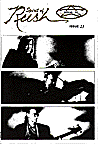
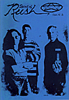
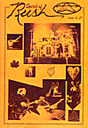
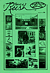
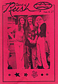
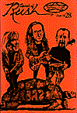
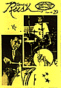
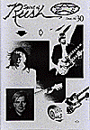

Issues 21 - 30

Issue No. 21
Spring 1993
SI Magazine article with Neil Peart - June 1992
"Signals Radio Special"
Bootleg CD's
"Moving Pictures Radio Special"
"A Guide To Rush On Film & Video"
Sounds review of Exit... Stage Left - December 5, 1981
Issue No. 23
Autumn/Winter 1993
Exclusive interview with Geddy Lee
"Hold Your Fire" Tour Rider, 1987-1988
"The RUSH Tapes" -- Part One
Collector's Corner -- Permanent Waves
Circus magazine article -- 1977
Sounds magazine article -- 1977
Hard Force magazine article -- June 1992

Issue No. 24
January 1994
"Wilderness of Mirrors" -- by Neil Peart
Counterparts Album Launch World Premier (Part One)
Readers' views on the new Rush album

Issue No. 25
March 1994
"Spirit of Rush Counterparts Tour '94" -- by Janet Balmer
"Countdown Cafe: An Interview with Alex" -- Holland, Nov. 1993
Network Magazine article -- November 1993
Counterparts Album Launch World Premier (Part Two)
Interview w/Howard Ungerleider
"Hold Your Fire" Tour Rider (Part Two)

Issue No. 26
May 1994
Rush Backstage Club Q&A w/Neil Peart -- January 1994
"The RUSH Tapes" -- Part Two
Sounds magazine article -- July 1976
"Hold Your Fire" Tour Rider, 1987-1988 (further extracts)
"Hatchet, Axe and Saw" -- by Brian Czernik
"Rock In The Environment" with Neil Peart
Sounds magazine article -- 1977
Record Week magazine article -- August 22, 1977
Entertainment Weekly magazine article -- August 26, 1977

Issue No. 27
July 1994
"Face 2 Face w/Alex Lifeson" -- by Stewart Gilray
Rush Trivia -- Rush endorsements
"Can't Stop Moving" -- by Dave Lythgoe
"To Be Totally Obsessed -- That's The Only Way" -- by Ula Gehret
"Grand Finale" -- by Janet Balmer

Issue No. 28
October 1994
"A Port Boy's Story" by Neil Peart
"Some Rush: 20 Years to (Juno) Hall of Fame"
"13 Years and 3000 miles" Toronto May 7 1994
"Countdown Cafe" Holand 1992 Interview with Geddy
"Different Strings" for Rush guitar fans
"And the Lights" by B. Parmerter - conversation with Howard Ungerleider

Issue No. 29
April 1995
"Drumbeats" Pt.1 - by Kevin J. Anderson & Neil Peart
"Signature Guitars" - by Andy Piercy
"Burning For Buddy" by Neil Peart

Issue No. 30
September 1995
Guitarist article - May 1995
"Drumbeats" Pt.2 - by Kevin J. Anderson & Neil Peart
"Pause & Play" int. w/Neil Peart - October 18, 1994
Car Stereo Review article about Alex's Mercedes - Jan/Feb 1994
"CD Reviews" - by Uncle Tel
The Orbit Room menu